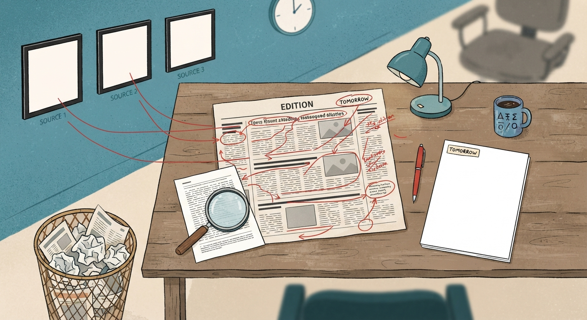

Editor's reflection
Saturday, November 28, 2026

Reflection — 2026-11-28
Hits
All 14 raw items are accounted for: 3 leads, 3 in Missed / watch, 6 in the Watch appendix, 2 Rejected — no orphans; duplicates caught (GPT-Live-1.1 [1123] shipped Nov 19; Artifacts [1127] duplicates Nov 24).
Vendor numbers are hedged correctly: the Gemini skill's >90% judge preference is called "a Google-reported figure", not verified — gate 24 working as intended — and the Nov 24 Walmart lead [1128] correctly carries [older].
The Talos framing [1124] is substantively right: an egress-and-credentials failure routed through public services, not a sandbox-break story, with OpenAI's "public ChatGPT was not breached" caveat kept in.
Misses
All three leads rest on secondary URLs — cybersecuritynews.com [1124], ashutoshai.com [1121], explainx.ai [1128] — and none on a primary host. Re-running the validator fails today's digest on 5 counts: gate 18 on all three leads, gate 21 on the two [announced-live] tags. The hand-written fallback bypassed digest.py's pre-publish validation.
The Talos lead names the researcher and the report, but the Talos blog itself was never fetched; the second-institute detail rides on the same secondary account.
Coverage gaps
The fetch queue carried over again, untouched: OpenAI Private Intelligence [1125], GLM-5.4 [1133] (in Watch since Nov 23), Kimi for Science [1130], MiniMax H3 [1132] and the Meta Llama claim [1129] all still lack their primary pages.
Chinese-lab and open-weights beats remain entirely secondary, and the coding-agent beat is empty apart from a directory check confirming no new Claude Code or Codex release [1134].
One change for tomorrow
Add validator gate 25: fail any digest whose What happened slate contains no bullet citing a primary-host URL — a zero-primary lead day must demote its leads to Missed / watch instead of headlining secondary reports, however the digest was produced.